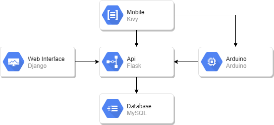

Integração Python
Esta documentação busca expor como foi realizada a intergração de várias tecnologias python, objetivando a composição de um sistema capaz de registrar entradas não previstas em ambiente domiciliar.
Tecnologias Envolvidas
- Framework Django
- Framework Flask
- Mobile Com Kivy
- Banco de Dados MySQL
- Arduino
Arquitetura
Para integrar todas essas tecnologias foi necessário determinar explicitamente onde cada uma seria envolvida. Com o objetivo de ter na sua conclusão um estável funcionamento do produto final. Sendo assim como banco de dados foi utilizado o MySQL e para centralizar as operações de persistência neste banco foi adicionada a api sendo escrita com Flask. Com a centralização da persistência de dados sendo feita pela api, os outros componentes passam a requisitarem este componente. A web interface foi construída utilizando o Django com seus padrões de projeto. Nos termos de aplicativo mobile utilizamos a tecnologia Kivy. Por fim como dispositivo de captura de movimentações no ambiente utilizamos o Arduino e seus componentes e módulos.

Documentação do Projeto
Para realizar a documentação deste projeto foi utilizando a biblioteca gitbook, seguindo sua estrutura para gerar os artefatos padronizados aqui expostos.
Esta documentação pode ser encontrada em sua forma mais bruta no link safetydocs.
Gerando build.
gitbook build ./ ./bookIniciando Serve Para Previa.
gitbook serve ./ ./bookGerando Pdf do Conteúdo.
gitbook pdf ./ ./book.pdf